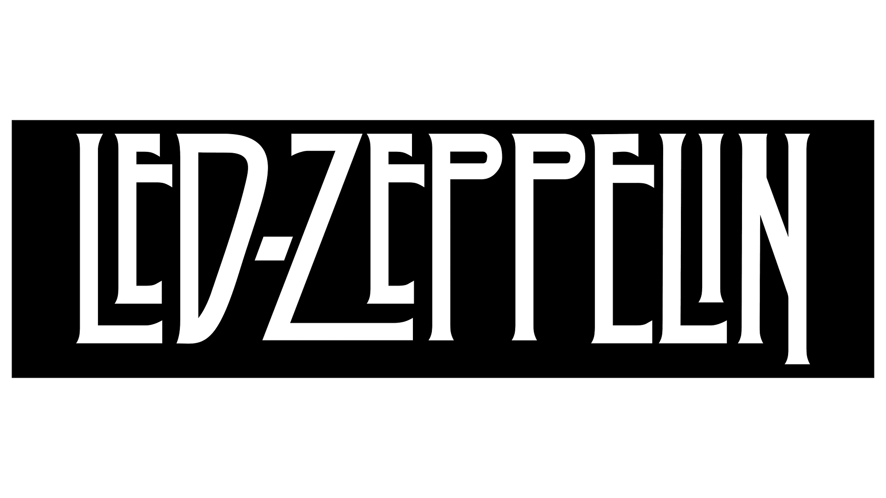
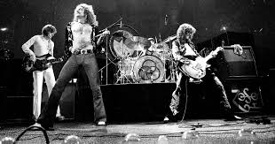
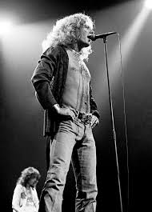
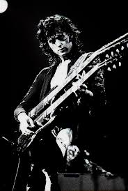
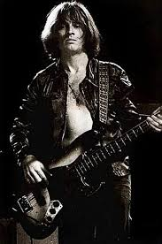

Led Zeppelin was a British rock band formed in London in 1968 by guitarist Jimmy Page, formerly of The Yardbirds. The band consisted of Jimmy Page on guitar, John Paul Jones on bass and keyboards, vocalist Robert Plant, and John Bonham on drums. They are considered one of the most important and influential bands of the 1970s and in the history of rock. Led Zeppelin incorporated elements from a wide range of influences and genres, including blues, rock and roll, soul, hard rock, Celtic music, rockabilly, Indian music, progressive rock, folk, psychedelic rock, reggae, and country, among others, and are considered one of the seminal groups in the emergence of heavy metal.
The wait is over for rock fans! We are thrilled to announce the upcoming tour dates and destinations for one of the most iconic voices in music history. From intimate theater settings in the U.S. to the roar of major festivals in South America and Europe, 2025 and 2026 will be defined by the magic of Robert Plant. Get ready to experience the mysticism of Saving Grace, the thunderous energy of Jason Bonham honoring his father’s legacy, and Robert’s triumphant return to Latin America.

Robert Anthony Plant (West Bromwich, England, August 20, 1948) is a British musician, composer and producer, best known for being the lead singer of the rock band Led Zeppelin from its founding in 1968 until its breakup in 1980..

James Patrick Page (Heston, Middlesex, England, January 9, 1944) is a British multi-instrumentalist musician and virtuoso classic rock guitarist; founder of the group Led Zeppelin from 1968 until its dissolution in 1980. He is considered one of the greatest, most influential and versatile musicians and guitarists of all time.

John Richard Baldwin (Sidcup, England, January 3, 1946),[1] better known as John Paul Jones, is a British multi-instrumentalist and composer, bassist and keyboardist for the British band Led Zeppelin. Due to his extensive musical career, he is considered one of the greatest bassists in rock history. He has influenced several artists and bassists, such as John Entwistle, Flea, Cliff Burton, and Jaco Pastorius; and he collaborated with Diamanda Galás on the composition of a duet album, The Sporting Life.
John Henry Bonham (Redditch, England; May 31, 1948 – Clewer, England; September 25, 1980) was a British musician famous for being the drummer of the rock band Led Zeppelin. He is considered one of the greatest rock drummers of all time, as he changed the way the instrument was approached.